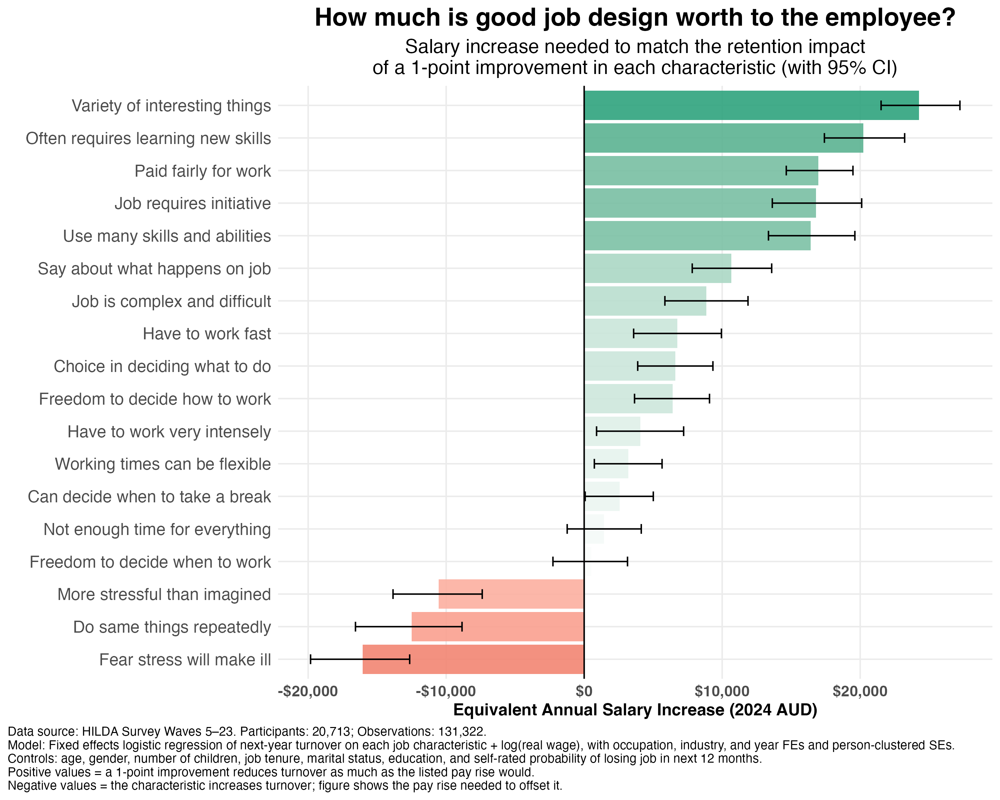

There's a huge literature linking job design to psychosocial risk, mental health, and employee wellbeing. But it can be harder to link job design to financial outcomes. This is partly because the returns are diffuse across outcomes like turnover, absenteeism, productivity, and mental health claims, and also because they take time to show up. This means that people-related investments don't always get the same consideration as policies with a clearer ROI.
I've written before about quantifying the financial value of job satisfaction in terms of replacement cost savings for an organisation. In this analysis, I look at the issue from the employee's perspective. Using data from the HILDA survey, I examined the following question:
How much more would someone need to be paid to reduce their chance of leaving their job by the same amount as a 1-point improvement (on a 7-point scale) in a given job characteristic?
To answer this question, I first estimated how much salary and each job characteristic affect turnover. I then identified the salary change that matches the retention impact of a 1-point improvement in the characteristic.

Here's what the results showed:
1) The most valuable things are interest, learning, and initiative. A 1-point increase in a job involving "a variety of interesting things" was associated with a retention impact equivalent to a $25k pay rise. Learning new skills, taking initiative, and using many skills and abilities were all in the $15k–$20k range.
2) Autonomy was worth between $6k and $10k. Having a say about what happens in your job was worth about $10k. Freedom over how and what you do in your work came in at about $6.5k. According to this analysis, having flexibility in working times was worth a little less (around $3k).
3) Stress and monotony had a retention impact equivalent to a cut in pay. Work stress was associated with higher turnover by an amount comparable to taking $10k–$16k off someone's salary. Jobs which require doing the same things repeatedly were equivalent to a $12k paycut.
Of course, these are only associations, not causal inferences. All we can say here is that people who have more of certain characteristics tend to leave their jobs at a lower rate than expected given their salary. Also the job characteristics themselves are correlated, so their combined effects aren't necessarily additive (you'd need a different analysis to assess this).
Still, I think analyses like these are useful for communicating to stakeholders the value that people initiatives can provide. It frames the initiative in the same terms decision makers use to evaluate other policies, so they can compare apples with apples.